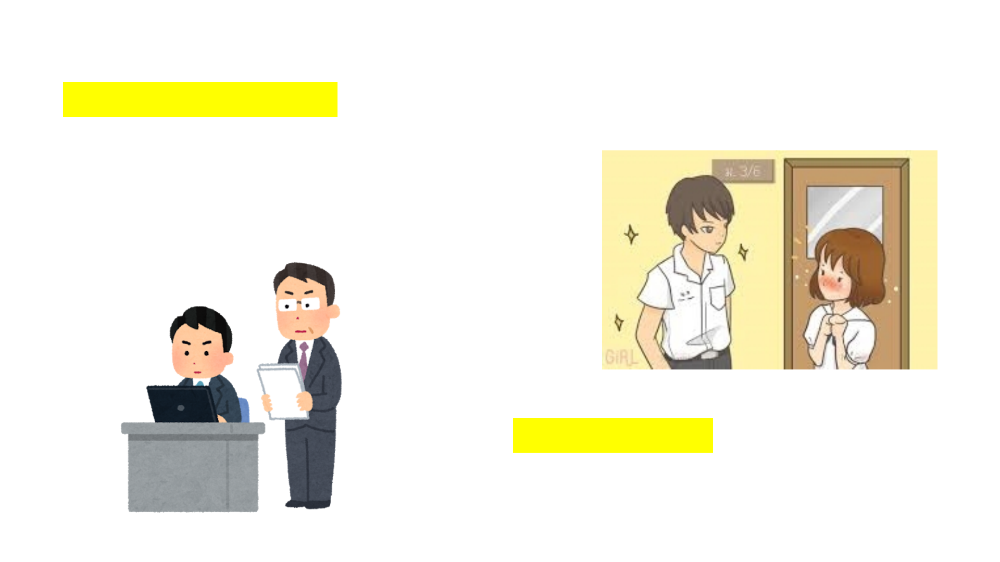

1.さん(san)�ใช้ลงท้ายสำหรับชื่อบุคคล แปลว่า"คุณ“
ซึ่งสามารถใช้ได้ทั้งผู้ชายและผู้หญิงสำหรับบุคคลที่ไม่ใช่คนในครอบครัว
วิธีเรียกชื่อคนญี่ปุ่นนามสกุล + san
คำว่าさんสามารถใช้ร่วมกับคำนามอื่น เช่นชื่อนิคุยะซัง
หมายถึง เจ้าของร้านขายเนื้อ
2.�さま(sama)�มีความหมายเหมือนกับคำว่า"ท่าน"
ความหมายเป็นทางการและให้เกียรติมากกว่าคำว่า“さん"
ในทางธุรกิจคำว่า“さま"จะใช้เขียนต่อคำลงท้ายชื่อสำหรับบุคคล
ที่เราต้องการจะติดต่อทางE-mail
ในด้านบริการจะนิยมใช้ในสำหรับเรียกลูกค้าหรือผู้ที่มารับการ
บริการต่างๆเช่นโรงพยาบาลร้านค้าเป็นต้น
3.くん�(kun)�ใช้ลงท้ายชื่อเด็กผู้ชายใช้สำหรับคนใกล้ชิด
บุคคลที่อายุมากกว่าเรียกคนที่อายุน้อยกว่า
หรือในบางครั้งใช้เรียกบุคคลที่มีอายุไล่เลี่ยกัน
ในบางครั้งจะมีการใช้เรียกくんโดยหัวหน้างานที่เป็นผู้ชาย
จะเรียกพนักงานสาวออฟฟิต
หรืออาจารย์มักจะเรียกลูกศิษย์ท้ายโดยคำว่า"คุง"สำหรับเด็กผู้ชาย

4.ちゃん(chan)�ใช้ลงท้ายสำหรับชื่อคนใกล้ชิดเพศหญิง
โดยเฉพาะอย่างยิ่งเด็กผู้หญิงและคนรักหรือเพื่อนที่สนิทกันมากๆ
ผู้หญิงบางคนนิยมเรียกชื่อตัวเองลงท้ายด้วย ちゃん
ในบางครั้งใช้เรียกชื่อสัตว์เลี้ยงตัวเองลงท้ายด้วยคำว่า"ちゃん"

5.�せんぱい(senpai)���แปลว่ารุ่นพี่ใช้สำหรับบุคคลที่อาวุโสกว่าในกลุ่มของตัวเอง
เช่นรุ่นน้องเรียกรุ่นพี่ที่โรงเรียนนักกีฬาใหม่เรียกนักกีฬาที่มาก่อน
หรือในธุรกิจใช้เรียกตำแหน่งผู้อาวุโสกว่า
6.こうはい(kōhai)
แปลว่ารุ่นน้องใช้เรียกในทางกลับกัน
7.�せんせい(sensei)�
ใช้เรียกชื่อบุคคลที่มีความเชี่ยวชาญด้า
นนั้นๆเช่นอาจารย์หมอหรือทนายเ
พื่อแสดงถึงการเคารพ